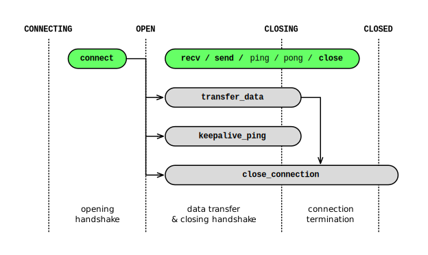
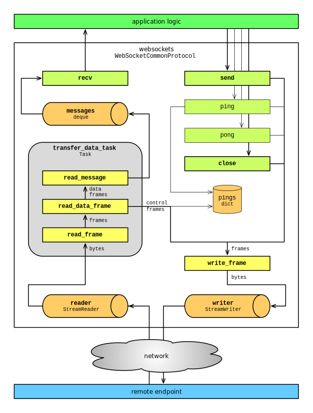

Design (legacy asyncio)¶
This document describes the design of the legacy implementation of websockets. It assumes familiarity with the specification of the WebSocket protocol in RFC 6455.
It’s primarily intended at maintainers. It may also be useful for users who wish to understand what happens under the hood.
Warning
Internals described in this document may change at any time.
Backwards compatibility is only guaranteed for public APIs.
Lifecycle¶
State¶
WebSocket connections go through a trivial state machine:
CONNECTING: initial state,OPEN: when the opening handshake is complete,CLOSING: when the closing handshake is started,CLOSED: when the TCP connection is closed.
Transitions happen in the following places:
CONNECTING -> OPEN: inconnection_open()which runs when the opening handshake completes and the WebSocket connection is established — not to be confused withconnection_made()which runs when the TCP connection is established;OPEN -> CLOSING: inwrite_frame()immediately before sending a close frame; since receiving a close frame triggers sending a close frame, this does the right thing regardless of which side started the closing handshake; also infail_connection()which duplicates a few lines of code fromwrite_close_frame()andwrite_frame();* -> CLOSED: inconnection_lost()which is always called exactly once when the TCP connection is closed.
Coroutines¶
The following diagram shows which coroutines are running at each stage of the connection lifecycle on the client side.
{kind=link}
The lifecycle is identical on the server side, except inversion of control makes
the equivalent of connect() implicit.
Coroutines shown in green are called by the application. Multiple coroutines may interact with the WebSocket connection concurrently.
Coroutines shown in gray manage the connection. When the opening handshake
succeeds, connection_open() starts two
tasks:
transfer_data_taskrunstransfer_data()which handles incoming data and letsrecv()consume it. It may be canceled to terminate the connection. It never exits with an exception other thanCancelledError. See data transfer below.keepalive_ping_taskrunskeepalive_ping()which sends Ping frames at regular intervals and ensures that corresponding Pong frames are received. It is canceled when the connection terminates. It never exits with an exception other thanCancelledError.close_connection_taskrunsclose_connection()which waits for the data transfer to terminate, then takes care of closing the TCP connection. It must not be canceled. It never exits with an exception. See connection termination below.
Besides, fail_connection() starts the
same close_connection_task when the
opening handshake fails, in order to close the TCP connection.
Splitting the responsibilities between two tasks makes it easier to guarantee that websockets can terminate connections:
within a fixed timeout,
without leaking pending tasks,
without leaking open TCP connections,
regardless of whether the connection terminates normally or abnormally.
transfer_data_task completes when no
more data will be received on the connection. Under normal circumstances, it
exits after exchanging close frames.
close_connection_task completes when
the TCP connection is closed.
Opening handshake¶
websockets performs the opening handshake when establishing a WebSocket
connection. On the client side, connect() executes it before
returning the protocol to the caller. On the server side, it’s executed before
passing the protocol to the ws_handler coroutine handling the connection.
While the opening handshake is asymmetrical — the client sends an HTTP Upgrade request and the server replies with an HTTP Switching Protocols response — websockets aims at keeping the implementation of both sides consistent with one another.
On the client side, handshake():
builds an HTTP request based on the
uriand parameters passed toconnect();writes the HTTP request to the network;
reads an HTTP response from the network;
checks the HTTP response, validates
extensionsandsubprotocol, and configures the protocol accordingly;moves to the
OPENstate.
On the server side, handshake():
reads an HTTP request from the network;
calls
process_request()which may abort the WebSocket handshake and return an HTTP response instead; this hook only makes sense on the server side;checks the HTTP request, negotiates
extensionsandsubprotocol, and configures the protocol accordingly;builds an HTTP response based on the above and parameters passed to
serve();writes the HTTP response to the network;
moves to the
OPENstate;returns the
pathpart of theuri.
The most significant asymmetry between the two sides of the opening handshake lies in the negotiation of extensions and, to a lesser extent, of the subprotocol. The server knows everything about both sides and decides what the parameters should be for the connection. The client merely applies them.
If anything goes wrong during the opening handshake, websockets fails the connection.
Data transfer¶
Symmetry¶
Once the opening handshake has completed, the WebSocket protocol enters the data transfer phase. This part is almost symmetrical. There are only two differences between a server and a client:
client-to-server masking: the client masks outgoing frames; the server unmasks incoming frames;
closing the TCP connection: the server closes the connection immediately; the client waits for the server to do it.
These differences are so minor that all the logic for data framing, for
sending and receiving data and for closing the connection is implemented
in the same class, WebSocketCommonProtocol.
The is_client attribute tells which
side a protocol instance is managing. This attribute is defined on the
WebSocketServerProtocol and
WebSocketClientProtocol classes.
Data flow¶
The following diagram shows how data flows between an application built on top of websockets and a remote endpoint. It applies regardless of which side is the server or the client.
{kind=link}
Public methods are shown in green, private methods in yellow, and buffers in orange. Methods related to connection termination are omitted; connection termination is discussed in another section below.
Receiving data¶
The left side of the diagram shows how websockets receives data.
Incoming data is written to a StreamReader in order to
implement flow control and provide backpressure on the TCP connection.
transfer_data_task, which is started
when the WebSocket connection is established, processes this data.
When it receives data frames, it reassembles fragments and puts the resulting
messages in the messages queue.
When it encounters a control frame:
if it’s a close frame, it starts the closing handshake;
if it’s a ping frame, it answers with a pong frame;
if it’s a pong frame, it acknowledges the corresponding ping (unless it’s an unsolicited pong).
Running this process in a task guarantees that control frames are processed
promptly. Without such a task, websockets would depend on the application to
drive the connection by having exactly one coroutine awaiting
recv() at any time. While this happens
naturally in many use cases, it cannot be relied upon.
Then recv() fetches the next message
from the messages queue, with some
complexity added for handling backpressure and termination correctly.
Sending data¶
The right side of the diagram shows how websockets sends data.
send() writes one or several data frames
containing the message. While sending a fragmented message, concurrent calls to
send() are put on hold until all
fragments are sent. This makes concurrent calls safe.
ping() writes a ping frame and yields a
Future which will be completed when a matching pong frame is
received.
pong() writes a pong frame.
close() writes a close frame and waits
for the TCP connection to terminate.
Outgoing data is written to a StreamWriter in order to
implement flow control and provide backpressure from the TCP connection.
Closing handshake¶
When the other side of the connection initiates the closing handshake,
read_message() receives a close frame
while in the OPEN state. It moves to the CLOSING state, sends a close
frame, and returns None, causing
transfer_data_task to terminate.
When this side of the connection initiates the closing handshake with
close(), it moves to the CLOSING
state and sends a close frame. When the other side sends a close frame,
read_message() receives it in the
CLOSING state and returns None, also causing
transfer_data_task to terminate.
If the other side doesn’t send a close frame within the connection’s close timeout, websockets fails the connection.
The closing handshake can take up to 2 * close_timeout: one
close_timeout to write a close frame and one close_timeout to receive
a close frame.
Then websockets terminates the TCP connection.
Connection termination¶
close_connection_task, which is
started when the WebSocket connection is established, is responsible for
eventually closing the TCP connection.
First close_connection_task waits for
transfer_data_task to terminate, which
may happen as a result of:
a successful closing handshake: as explained above, this exits the infinite loop in
transfer_data_task;a timeout while waiting for the closing handshake to complete: this cancels
transfer_data_task;a protocol error, including connection errors: depending on the exception,
transfer_data_taskfails the connection with a suitable code and exits.
close_connection_task is separate from
transfer_data_task to make it easier
to implement the timeout on the closing handshake. Canceling
transfer_data_task creates no risk of
canceling close_connection_task and
failing to close the TCP connection, thus leaking resources.
Then close_connection_task cancels
keepalive_ping(). This task has no
protocol compliance responsibilities. Terminating it to avoid leaking it is the
only concern.
Terminating the TCP connection can take up to 2 * close_timeout on the
server side and 3 * close_timeout on the client side. Clients start by
waiting for the server to close the connection, hence the extra
close_timeout. Then both sides go through the following steps until the
TCP connection is lost: half-closing the connection (only for non-TLS
connections), closing the connection, aborting the connection. At this point
the connection drops regardless of what happens on the network.
Connection failure¶
If the opening handshake doesn’t complete successfully, websockets fails the connection by closing the TCP connection.
Once the opening handshake has completed, websockets fails the connection by
canceling transfer_data_task and
sending a close frame if appropriate.
transfer_data_task exits, unblocking
close_connection_task, which closes
the TCP connection.
Server shutdown¶
WebSocketServer closes asynchronously like
asyncio.Server. The shutdown happen in two steps:
Stop listening and accepting new connections;
Close established connections with close code 1001 (going away) or, if the opening handshake is still in progress, with HTTP status code 503 (Service Unavailable).
The first call to close starts a task that
performs this sequence. Further calls are ignored. This is the easiest way to
make close and
wait_closed idempotent.
Cancellation¶
User code¶
websockets provides a WebSocket application server. It manages connections and passes them to user-provided connection handlers. This is an inversion of control scenario: library code calls user code.
If a connection drops, the corresponding handler should terminate. If the server shuts down, all connection handlers must terminate. Canceling connection handlers would terminate them.
However, using cancellation for this purpose would require all connection
handlers to handle it properly. For example, if a connection handler starts
some tasks, it should catch CancelledError, terminate or
cancel these tasks, and then re-raise the exception.
Cancellation is tricky in asyncio applications, especially when it
interacts with finalization logic. In the example above, what if a handler
gets interrupted with CancelledError while it’s finalizing
the tasks it started, after detecting that the connection dropped?
websockets considers that cancellation may only be triggered by the caller of a coroutine when it doesn’t care about the results of that coroutine anymore. (Source: Guido van Rossum). Since connection handlers run arbitrary user code, websockets has no way of deciding whether that code is still doing something worth caring about.
For these reasons, websockets never cancels connection handlers. Instead it expects them to detect when the connection is closed, execute finalization logic if needed, and exit.
Conversely, cancellation isn’t a concern for WebSocket clients because they don’t involve inversion of control.
Library¶
Most public APIs of websockets are coroutines. They may be canceled, for example if the user starts a task that calls these coroutines and cancels the task later. websockets must handle this situation.
Cancellation during the opening handshake is handled like any other exception: the TCP connection is closed and the exception is re-raised. This can only happen on the client side. On the server side, the opening handshake is managed by websockets and nothing results in a cancellation.
Once the WebSocket connection is established, internal tasks
transfer_data_task and
close_connection_task mustn’t get
accidentally canceled if a coroutine that awaits them is canceled. In other
words, they must be shielded from cancellation.
recv() waits for the next message in the
queue or for transfer_data_task to
terminate, whichever comes first. It relies on wait() for waiting
on two futures in parallel. As a consequence, even though it’s waiting on a
Future signaling the next message and on
transfer_data_task, it doesn’t
propagate cancellation to them.
ensure_open() is called by
send(),
ping(), and
pong(). When the connection state is
CLOSING, it waits for
transfer_data_task but shields it to
prevent cancellation.
close() waits for the data transfer task
to terminate with timeout(). If it’s canceled or if the timeout
elapses, transfer_data_task is
canceled, which is correct at this point.
close() then waits for
close_connection_task but shields it
to prevent cancellation.
close() and
fail_connection() are the only places
where transfer_data_task may be
canceled.
close_connection_task starts by
waiting for transfer_data_task. It
catches CancelledError to prevent a cancellation of
transfer_data_task from propagating to
close_connection_task.
Backpressure¶
Note
This section discusses backpressure from the perspective of a server but the concept applies to clients symmetrically.
With a naive implementation, if a server receives inputs faster than it can process them, or if it generates outputs faster than it can send them, data accumulates in buffers, eventually causing the server to run out of memory and crash.
The solution to this problem is backpressure. Any part of the server that receives inputs faster than it can process them and send the outputs must propagate that information back to the previous part in the chain.
websockets is designed to make it easy to get backpressure right.
For incoming data, websockets builds upon StreamReader which
propagates backpressure to its own buffer and to the TCP stream. Frames are
parsed from the input stream and added to a bounded queue. If the queue fills
up, parsing halts until the application reads a frame.
For outgoing data, websockets builds upon StreamWriter which
implements flow control. If the output buffers grow too large, it waits until
they’re drained. That’s why all APIs that write frames are asynchronous.
Of course, it’s still possible for an application to create its own unbounded buffers and break the backpressure. Be careful with queues.
Concurrency¶
Awaiting any combination of recv(),
send(),
close()
ping(), or
pong() concurrently is safe, including
multiple calls to the same method, with one exception and one limitation.
Only one coroutine can receive messages at a time. This constraint avoids non-deterministic behavior (and simplifies the implementation). If a coroutine is awaiting
recv(), awaiting it again in another coroutine raisesRuntimeError.Sending a fragmented message forces serialization. Indeed, the WebSocket protocol doesn’t support multiplexing messages. If a coroutine is awaiting
send()to send a fragmented message, awaiting it again in another coroutine waits until the first call completes. This will be transparent in many cases. It may be a concern if the fragmented message is generated slowly by an asynchronous iterator.
Receiving frames is independent from sending frames. This isolates
recv(), which receives frames, from the
other methods, which send frames.
While the connection is open, each frame is sent with a single write. Combined
with the concurrency model of asyncio, this enforces serialization. The
only other requirement is to prevent interleaving other data frames in the
middle of a fragmented message.
After the connection is closed, sending a frame raises
ConnectionClosed, which is safe.